小さなお子様からご年配の方まで、地域の皆さまが安心して通える歯科医院を一緒につくるお仕事です。未経験の方やブランクのある方も親切丁寧にサポートします。
募集職種
助手 / 衛生士
未経験歓迎
ブランクOK
勤務シフト
週1日 / 3時間〜
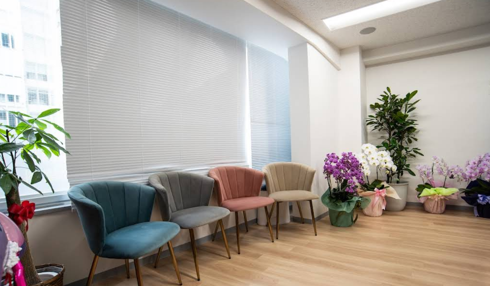
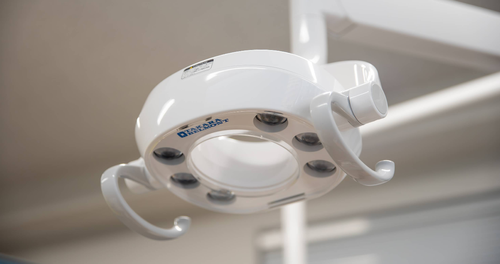
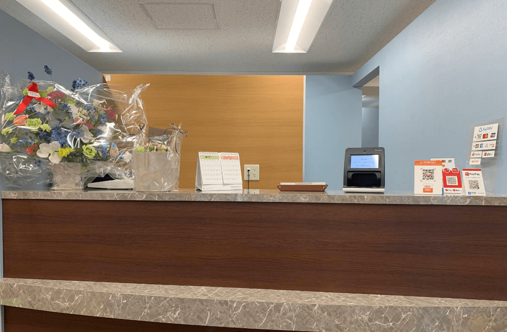
文京区小石川
あたたかい職場環境
歯科助手 ｜ 歯科衛生士
時給 1,300円〜2,300円 （見習い期間あり）
【ご応募・お電話問合せ】 9:30～12:30 / 14:30～18:00 ※未経験・ブランク歓迎 休診日: 日曜・祝日（土曜は午前のみ）
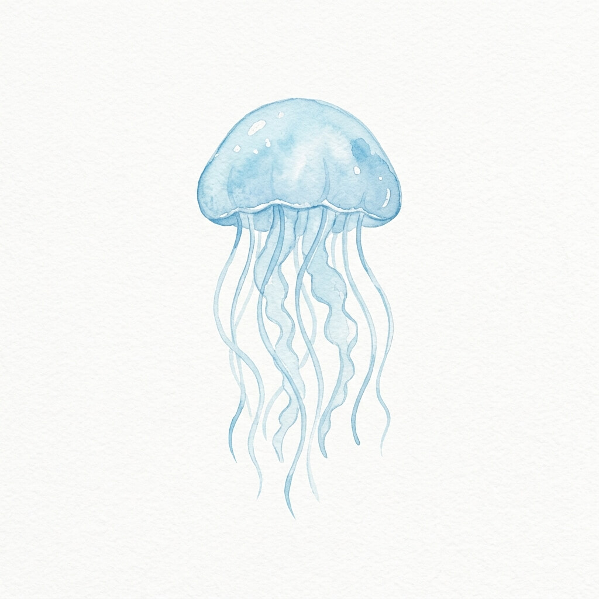
富沢歯科は、東京都文京区小石川にある歯科医院です。
一般歯科・小児歯科を中心に、予防治療や歯周病治療、ホワイトニングなど、幅広いお口のお悩みに対応しています。
患者様とのコミュニケーションを大切にしながら、安心して通っていただける医院づくりを行っています。
春日駅から徒歩5分の通いやすい立地です。
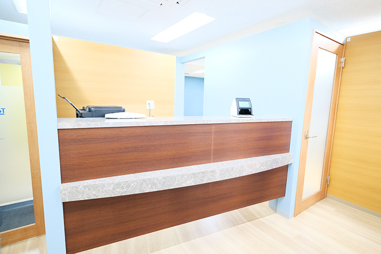
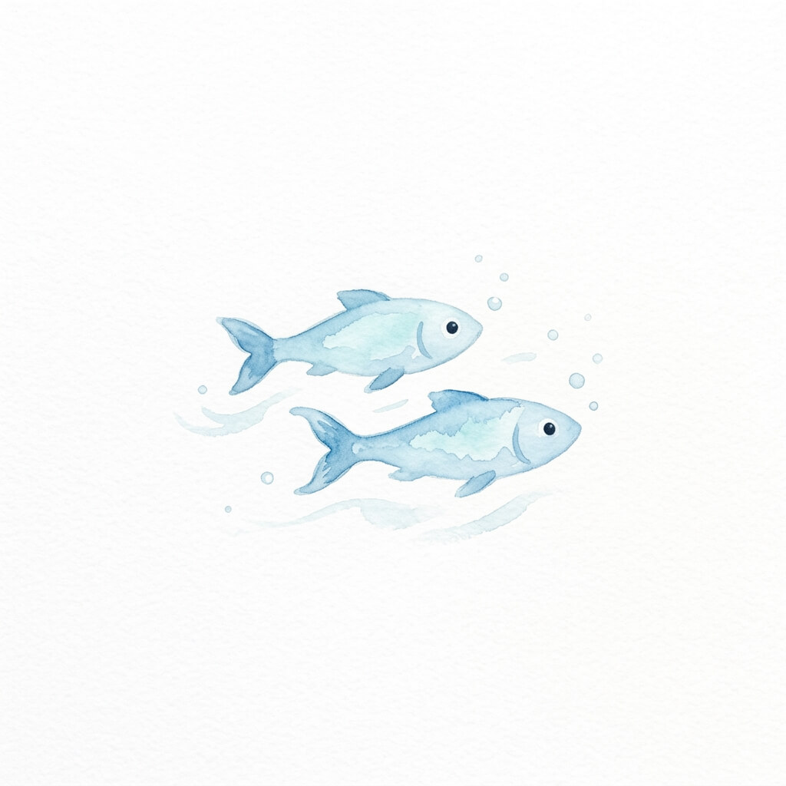
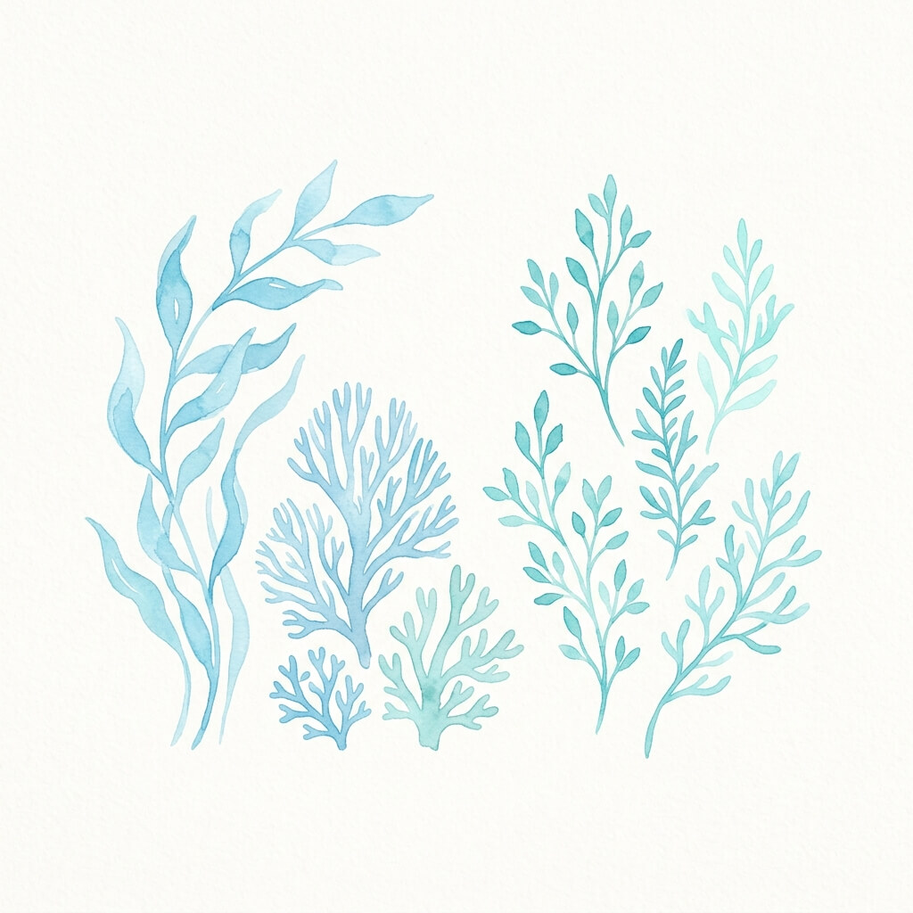
小さなお子様からご年配の方まで、幅広い年代の患者様が来院されます。
明るい声かけや丁寧な対応を大切にしながら、地域の皆さまのお口の健康を支えるお仕事です。
歯科助手は未経験の方やブランクのある方も相談可能です。
受付業務や診療補助など、できることから少しずつ慣れていただけます。
歯科衛生士の方は、これまでの経験や資格を活かして働けます。
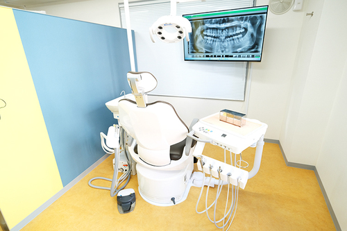
週1日から、1日3時間から相談できるため、家庭や子育て、プライベートとの両立もしやすい環境です。
土曜午後・日曜・祝日は休診のため、無理なく働きたい方にもおすすめです。
時給 1,300円〜1,500円 （見習い期間あり）
受付業務、患者様対応、診療補助、院内の準備や片付けなどを行います。
未経験OK / ブランクOK
時給 1,800円〜2,300円 （見習い期間あり）
歯科衛生士業務を中心に、予防ケア、診療補助、患者様への説明やサポートを行います。
歯科衛生士資格をお持ちの方
| 雇用形態 | パート・アルバイト |
|---|---|
| 就業場所 |
〒112-0002 東京都文京区小石川１丁目１３−１１ 3階 （東京メトロ南北線・都営三田線「春日駅」徒歩5分） |
| 勤務時間 |
9:00〜18:00（12:30〜14:30は昼休み） ※週1日から相談可能 / 1日3時間から相談可能 |
| 休日 | 土曜日午後・日曜日・祝祭日 |
| 待遇・福利厚生 |
昇給あり
時間外手当
交通費支給
自転車通勤可
制服貸与
試用期間あり
|
ドクターズ・ファイルにて、当院の詳しい求人情報および最新のイベント情報を公開しております。ぜひ併せてご確認ください。
【ご応募・お電話問合せ】 9:30～12:30 / 14:30～18:00 ※未経験・ブランク歓迎 休診日: 日曜・祝日（土曜は午前のみ）
富沢歯科では、患者様が安心して通える歯科医院づくりを大切にしています。
受付での明るい対応、診療中のやさしい声かけ、清潔で落ち着いた院内づくり。
一つひとつの気配りが、患者様の安心につながります。
未経験の方も、ブランクのある方も大歓迎です。
地域に寄り添う歯科医院で、一緒に楽しく働きませんか。
「未経験から医療のお仕事に挑戦したい」
「仕事と家庭をバランスよく両立したい」
そんなあなたのご応募を心よりお待ちしております。
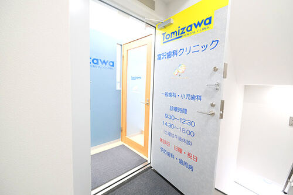
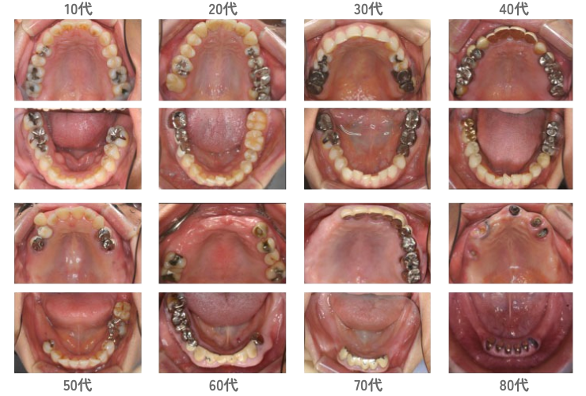
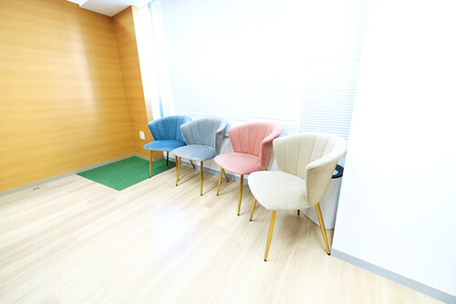
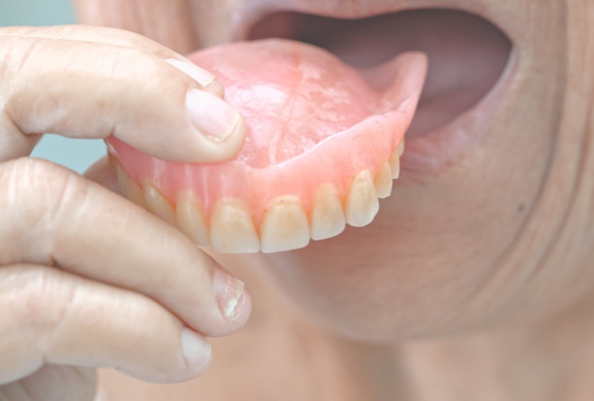
| 店舗名 | 富沢歯科クリニック |
|---|---|
| 住所 |
〒112-0002 東京都文京区小石川１丁目１３−１１ 3階 （春日駅徒歩5分） |
| 電話番号 | 050-5448-5076 |
| 営業時間 |
9時30分～12時30分、14時30分～18時00分 ※土曜は午前のみ診療 |
| 定休日 | 日曜・祝日 |
| 応募メール | tomizawasika1985@gmail.com |